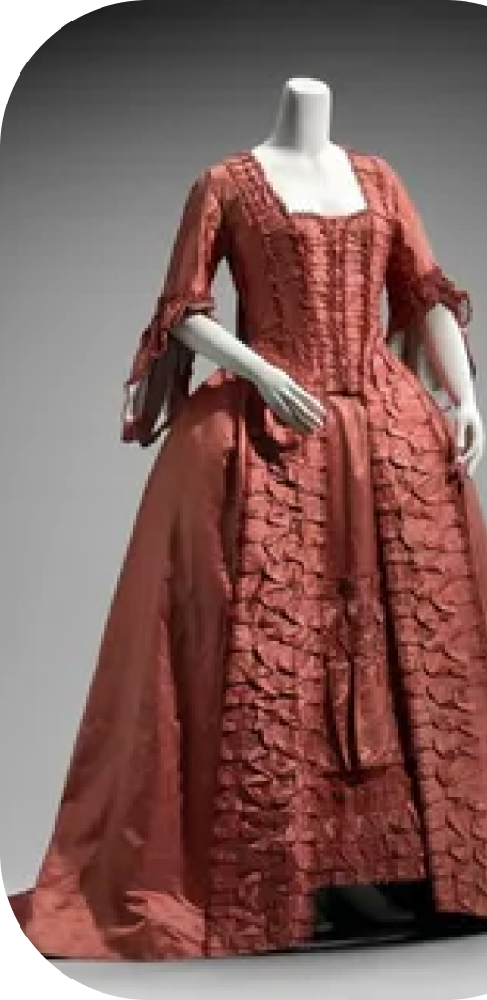

Мода
После средневековья, их балов и недоступности обычным людям хорошей одежды, наступает период упрощение повседневной одежды для буржуазии. Развиваются производства, для работы нужда более практичная одежда. Так и появляется фрак. Он, в отличие от неудобных многослойных костюмов, не был тяжелым и стал символом рабочего класса. Практично, деловито и едино у всех - принцип этого времени. Только женские платья имели большее разнообразие.
После французской революции на женском платье уменьшилось количество рюш и бантиков. Сменился и фасон: тюрнюры и пышные юбки ушли, а на смену пришли более облегающие платья высокая талия.